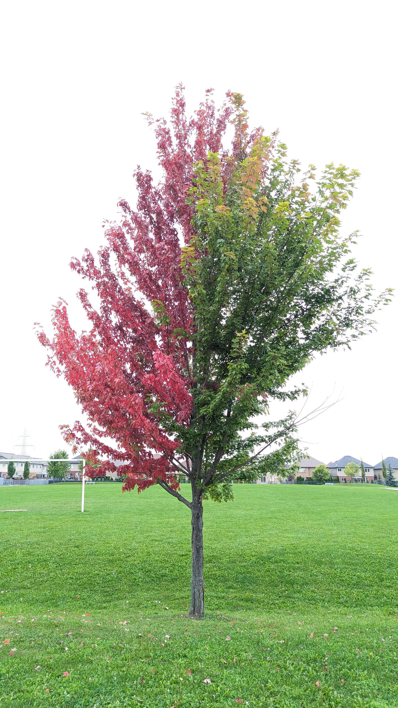

Homework 01 — Sunny vs. Shady Leaves
First steps in R: loading data, descriptive statistics, and a first plot
One or two sentences describing what this homework covers — shows up in the homeworks/index.qmd table.

Overview
In Lectures 01–02 and Worksheets 01–02 your class designed an experiment, collected leaf measurements, organized the data in a spreadsheet, and wrote your first R code. This homework asks you to take the next step: load your class dataset into R, compute descriptive statistics, and make two publication-quality figures.
You will practice the skills from Lectures 01–02:
- Setting up an R project with the correct folder structure
- Loading data with
read_csv()orread_excel() - Inspecting a data frame with
glimpse(),head(), anddim() - Using the pipe
%>%to chain steps - Calculating descriptive statistics with
summarize()— and understanding whysum(!is.na())is safer thanlength() - Making a boxplot with jittered points using
ggplot2 - Saving plots as PNG at
dpi = 300
Science context — Our hypotheses:
Null Hypothesis (H₀): There is no difference in leaf size or shape between the sunny and shady sides of a tree.
Alternate Hypothesis (Hₐ): Leaf size differs between the sunny and shady sides of a tree (shady leaves are predicted to be larger).
Submit to Canvas: (1) your completed
01_leaves.Rscript and (2) two saved PNG figures. Fill in all answer boxes in the script as#comments below the relevant code. The question numbers here match the# Q__markers in the skeleton script.
The Data
Your class measured leaves from the sunny and shady sides of trees. The data file tree_leaves.csv (posted on Canvas) has the following columns:
| Column | Type | What it holds |
|---|---|---|
tree_id |
chr | Which tree the leaf came from (T1–T5) |
side |
chr | "sunny" or "shady" |
leaf_num |
num | Leaf number within that tree and side |
weight_g |
num | Leaf weight (g) |
width_cm |
num | Leaf width at the widest point (cm) |
height_cm |
num | Leaf length from base to tip (cm) |
area_cm2 |
num | Estimated leaf area (cm²) — may contain NA |
Reference: Lectures 01–02 and Worksheets 01–02; R for Data Science Ch. 1–3; Data Carpentry — R for Ecology
Part 1 · Set up and load (→ Lecture 02, Worksheet 02)
Get your project organized
Before writing any code, confirm that your project folder looks like this:
tree_project/
├── data/
│ └── tree_leaves.csv ← copy from Canvas; never touch this file
├── scripts/
│ └── 01_leaves.R ← your script for this homework
└── figures/ ← plots you save will go hereOpen tree_project as your workspace in Positron (File → Open Folder).
Load the data
In your skeleton script, the read_csv() call is already written. Run it, then use glimpse() and dim() to inspect the result.
After loading, answer:
Q1 — Total rows in the dataset: ________
Q2 — Total columns: ________
Q3 — Data type of the
sidecolumn (fromglimpse()): ________
Count leaves by side using count(leaf_df, side):
Q4 — Number of sunny leaves: ________
Q5 — Number of shady leaves: ________
Part 2 · Why sum(!is.na()) beats length() (→ Lecture 02)
Real data has missing values (NA). The function length() counts all values — including NAs — so it can give you the wrong sample size. The safer approach is sum(!is.na(variable)), which counts only the values that are actually there.
Run the two lines in the skeleton and answer:
Q6 — What does
length(leaf_df$area_cm2)return? ________Q7 — What does
sum(!is.na(leaf_df$area_cm2))return? ________Q8 — Are those numbers the same? Y / N
Q9 — If they differ, what does the difference tell you?
!is.na() works
is.na(x) returns TRUE for each missing value and FALSE for each real value. The ! flips those, so !is.na(x) is TRUE for every real value. Wrapping that in sum() adds up the TRUEs — giving you the count of real observations. This is the right way to count n whenever your data might have gaps.
📖 R4DS reference: Chapter 18 — Missing values
Part 3 · Descriptive statistics with summarize() (→ Lecture 02, Worksheet 02)
What do the statistics actually mean?
Before running any code it helps to know what you are calculating:
| Statistic | Symbol | What it tells you |
|---|---|---|
| Mean | x̄ | The arithmetic average — add all values, divide by n |
| Median | — | The middle value when sorted — not pulled by extremes |
| Variance | s² | Average squared deviation from the mean — in squared units |
| Std dev | s | Square root of variance — back in the original units |
| Std error | SE | How much the mean would vary if you repeated the study; SE = s / √n |
| n | n | Number of real (non-missing) observations |
The p-value you will learn to calculate formally later in the course, but here is the idea: if there really were no difference between sunny and shady leaves, how often would you get a difference as large as the one you observed just by chance? A small p-value (typically < 0.05) means that chance alone is unlikely — your data support the alternate hypothesis.
Run the group_by() %>% summarize() pipeline
Complete the pipeline in the skeleton script. After running leaf_stats_df, fill in the table:
| Sunny | Shady | |
|---|---|---|
| n (weight_g) | ||
| Mean weight (g) | ||
| SD weight (g) | ||
| SE weight (g) | ||
| Mean width (cm) | ||
| Mean height (cm) |
Q10 — Is the mean weight higher for shady leaves than sunny leaves? Y / N
Q11 — Difference in mean weight (shady − sunny): ________ g
Q12 — Which side has a larger SE for weight? ____________
Q13 — What does a larger SE tell you about that group?
Part 4 · Quick summary with skimr (→ Lecture 02)
The skim() function from the skimr package gives you a fast, readable overview of an entire data frame — means, missing counts, histograms in text, and more. It is especially handy for a first look at new data.
Run skim(leaf_df) in the skeleton.
Q14 — How many
NAvalues doesskim()report forarea_cm2? ________Q15 — Does this match what you found with
sum(!is.na())in Part 2? Y / N
Part 5 · The [[ ]] shortcut for quick statistics (→ Lecture 02)
When you just want the mean or SE of one column fast — without a full pipeline — you can pull the column out as a vector using [[:
# Mean of one column — the fast way
mean(leaf_df[["weight_g"]], na.rm = TRUE)
# Standard error the same way
sd(leaf_df[["weight_g"]], na.rm = TRUE) /
sqrt(sum(!is.na(leaf_df[["weight_g"]])))leaf_df[["weight_g"]] extracts the weight_g column as a plain vector. This is the most direct path to a single number — useful for quick checks.
Run the four lines in the skeleton (mean, SD, n, SE for weight_g across all leaves combined) and answer:
Q16 — Overall mean leaf weight (all leaves, both sides): ________ g
Q17 — Overall SE of leaf weight: ________ g
Q18 — Why do we write
na.rm = TRUEinsidemean()andsd()?
Part 6 · Boxplot with jittered points (→ Lecture 02, Worksheet 02)
A boxplot shows the median, quartiles, and outliers. Overlaying the individual points lets you see how many observations are behind each box — an important check when sample sizes are small.
Complete the boxplot code in the skeleton and save it as a PNG.
Describe what you see:
Q19 — Which side has a higher median weight (from the box)? ________
Q20 — Do the boxes overlap substantially, somewhat, or not at all? ________________
Q21 — Approximate median weight for sunny leaves (read from the box): ________ g
Q22 — Approximate median weight for shady leaves (read from the box): ________ g
Q23 — Looking at the individual points, are there any leaves that seem unusually large or small (possible outliers)? Y / N If yes, which side?
Part 7 · Mean ± SE plot with stat_summary (→ Lecture 02, Worksheet 02)
A mean ± SE plot is often used in biology to show whether two group means are different. If the SE bars do not overlap at all, the difference is likely meaningful — though you will not know for sure until you run a formal test.
Complete the stat_summary plot in the skeleton and save it as a PNG.
Q24 — Do the SE error bars for sunny and shady overlap? Y / N
Q25 — Based on the mean ± SE plot and your descriptive statistics, does the data appear to support the alternate hypothesis (shady leaves are larger)? Y / N Explain in one sentence:
Part 8 · Connecting back to the science
Answer these questions in your own words. There are no wrong answers — we are thinking like scientists.
Q26 — Restate the null hypothesis in your own words:
Q27 — Restate the alternate hypothesis in your own words:
Q28 — Why do shady leaves need to be larger to survive? (Think about what a leaf does and what it has less of on the shady side.)
Q29 — Your class measured leaves from multiple trees. Why is it important to measure leaves from more than one tree rather than just one tree?
Submission checklist
Before uploading to Canvas, confirm:
Going further (optional — no points)
Make a scatter plot of width vs. height
Does wider also mean taller? Try this in your script:
scatter_plot <- ggplot(leaf_df, aes(x = width_cm, y = height_cm, color = side)) +
geom_point(size = 3, alpha = 0.7) +
geom_smooth(method = "lm", se = TRUE) +
labs(x = "Leaf width (cm)",
y = "Leaf height (cm)",
color = "Side of tree",
title = "Leaf dimensions — sunny vs. shady") +
theme_bw()
scatter_plotDo the regression lines look similar for sunny and shady leaves? What does it mean if they have different slopes?
Faceted histogram
ggplot(leaf_df, aes(x = weight_g, fill = side)) +
geom_histogram(binwidth = 0.5, color = "white", alpha = 0.8) +
facet_wrap(~side, ncol = 1) +
labs(x = "Leaf weight (g)", y = "Count",
title = "Distribution of leaf weight by side") +
theme_minimal() +
theme(legend.position = "none")Do the two distributions look roughly bell-shaped or skewed? Are they similar in spread? These observations will matter when we choose a statistical test later in the semester.
Data collected by BIOL 3810 students, University of Minnesota Duluth. Lectures 01–02 and Worksheets 01–02 cover all skills needed for this assignment.